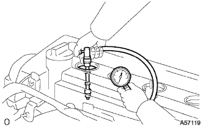

エンジン 点検 |
| 1. 冷却液(トヨタ純正スーパーLLC)点検 |
参照)| 2. エンジン オイル点検 |
参照)| 3. バッテリ点検 |
バッテリ比重点検
| 4. エアクリーナフィルタ エレメントSUB-ASSY点検 |
| 5. スパーク プラグ点検 |
| メーカー | 型式 |
|---|---|
| DENSO製 | K16R-U11 |
| NGK製 | BKR5EYA11 |
清掃
 |
プラグクリーナーを使用して、スパークプラグ清掃する。
外観点検
スパークプラグにねじ山の破損および絶縁体の損傷がないか点検する。
ギャップ点検·調整
 |
スパークプラグギャップを使用して、スパークプラグのギャップを測定する。
| 6. Vリブドベルト点検 |
 |
張力およびたわみ量点検
| 新品取り付け時 [ｍｍ] | 点検時 [ｍｍ] | |
|---|---|---|
| Vベルト | 8.0-9.0 | 12.5-13.5 |
| P/Sベルト | 8-10 | 11-13 |
| 新品取り付け時 [N{ｋｇｆ} ] | 点検時 [N{ｋｇｆ} ] | |
|---|---|---|
| Vベルト | 700-800 {71-82} | 300-400 {31-41} |
| P/Sベルト | 441-539 {45-55} | 245-343 {25-35} |
| 7. 点火時期点検 |
ＴａSCANによる点検
エンジンを暖機する。
DLS3にＴａSCANを接続する。
画面表示に従って操作し、[ECUデータモニター]画面を表示させる。
点火時期が基準値内であることを確認する。
エンジン回転を上げたとき、点火時期がすみやかに進角することを確認する。
[アクティブテスト]画面を表示させ、点火時期＃1を選択後、TC端子ON状態で測定する。
一般計器による点検
エンジンを暖機する。
シリンダヘッドカバーNo.2を取りはずす。
 |
図の位置のワイヤーハーネスを引きだし、タイミングライトのクリップをワイヤハーネスに接続する。
 |
ダイアグノーシスチェックワイヤNo.2を使用して、DLC3の13(TC)←→4(CG)端子間を短絡する。
点火時期が基準値内であることを確認する。
DLC3の13(TC)←→4(CG)端子間を開放する。
点火時期が基準値内であることを確認する。
エンジン回転数を上げたとき、点火時期がすみやかに進角することを確認する。
| 8. エンジン アイドル回転点検 |
ＴａSCANによる点検
エンジンを暖機する。
DLC3にＴａSCANを接続する。
画面指示に従って操作を行い、[点火時期点検]画面を表示させ、アイドル回転数を測定する。
一次電流検出タイプの回転計による点検
 |
DLC3の9(TAC)端子にタコパルスピックワイヤNo.2を取り付け、回転計を接続しアイドル回転数を測定する。
| 9. コンプレッション点検 |
エンジンを暖機する。
シリンダヘッドカバーNo.2を取りはずす。
イグニションコイルを取りはずす。
スパークプラグを取りはずす。
コンプレッションを点検する。
プラグホールにコンプレッションゲージを取り付ける。
スロットルを全開にする。
エンジンをクランキングしコンプレッションを測定する。
|  |
圧縮圧力が低い場合は、シリンダ内にエンジンオイルを少量注ぎ、再度コンプレッションを測定する。
| 10. CO，HC濃度点検 |
エンジンを始動する。
2500ｒ/ｍｉｎで180秒間レーシングする。
アイドル回転時にテスタプローブを40ｃｍ以上テールパイプに挿入する。
CO、HC濃度の点検を行う。
ＣＯ、ＨＣが基準値外の場合は、下に示した手順で行う。
オキシジエンセンサ点検
下の表を参考にトラブルシューティングを行う。
| CO | HC | 不具合 | 推定原因 |
|---|---|---|---|
| 正常 | 高い | ラフアイドル | 1.イグニッション不良
3.吸排気ガスもれ 4.シリンダ圧縮もれ |
| 低い | 高い | ラフアイドル（HC不安定） | 1.負圧もれ
|
| 高い | 高い | ラフアイドル（黒煙） | 1.エアエレメントつまり 2.PCVバルブつまり 3.EFIシステム不良
|